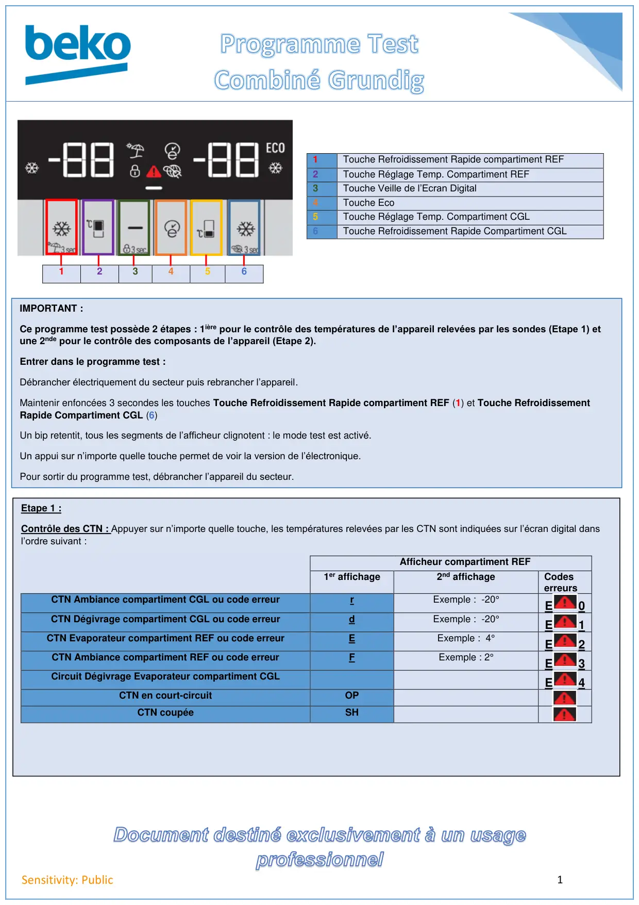
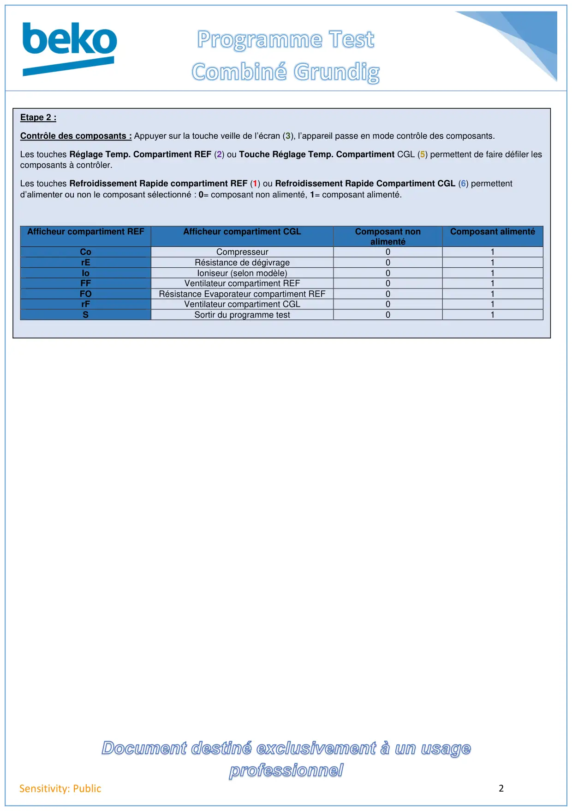

Prog Test Combiné Grundig

1Sensitivity: Public1234561Touche Refroidissement Rapide compartiment REF2Touche Réglage Temp. Compartiment REF3Touche Veille de l’Ecran Digital4Touche Eco5Touche Réglage Temp. Compartiment CGL6Touche Refroidissement Rapide Compartiment CGLIMPORTANT :Ce programme test possède 2 étapes : 1ière pour le contrôle des températures de l’appareil relevées par les sondes (Etape 1) etune 2nde pour le contrôle des composants de l’appareil (Etape 2).Entrer dans le programme test :Débrancher électriquement du secteur puis rebrancher l’appareil.Maintenir enfoncées 3 secondes les touches Touche Refroidissement Rapide compartiment REF (1) et Touche RefroidissementRapide Compartiment CGL (6)Un bip retentit, tous les segments de l’afficheur clignotent : le mode test est activé.Un appui sur n’importe quelle touche permet de voir la version de l’électronique.Pour sortir du programme test, débrancher l’appareil du secteur.Etape 1 :Contrôle des CTN : Appuyer sur n’importe quelle touche, les températures relevées par les CTN sont indiquées sur l’écran digital dansl’ordre suivant :Afficheur compartiment REF1er affichage2nd affichageCodeserreursCTN Ambiance compartiment CGL ou code erreurrExemple : -20°E0CTN Dégivrage compartiment CGL ou code erreurdExemple : -20°E1CTN Evaporateur compartiment REF ou code erreurEExemple : 4°E2CTN Ambiance compartiment REF ou code erreurFExemple : 2°E3Circuit Dégivrage Evaporateur compartiment CGLE4CTN en court-circuitOPCTN coupéeSH
1 / 2
2Sensitivity: PublicEtape 2 :Contrôle des composants : Appuyer sur la touche veille de l’écran (3), l’appareil passe en mode contrôle des composants.Les touches Réglage Temp. Compartiment REF (2) ou Touche Réglage Temp. Compartiment CGL (5) permettent de faire défiler lescomposants à contrôler.Les touches Refroidissement Rapide compartiment REF (1) ou Refroidissement Rapide Compartiment CGL (6) permettentd’alimenter ou non le composant sélectionné : 0= composant non alimenté, 1= composant alimenté.Afficheur compartiment REFAfficheur compartiment CGLComposant nonalimentéComposant alimentéCoCompresseur01rERésistance de dégivrage01IoIoniseur (selon modèle)01FFVentilateur compartiment REF01FORésistance Evaporateur compartiment REF01rFVentilateur compartiment CGL01SSortir du programme test01
2 / 2